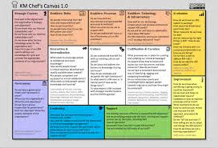

Grundlagen
Ein modernes Verständnis von Organisationen
Organisationen als Teil der Gesellschaft gibt es in vielfältigen Formen und Größen, z.B. Unternehmen, Schulen, Vereine und Parteien. Du weißt intuitiv, wann du es mit einer Organisation zu tun hast. Den Begriff "Organisation" zu definieren, ist aber nicht ganz so leicht. Daher wird oft versucht, Organisationen über ihren Zweck, Hierarchien (Aufbauorganisation), Prozesse (Ablauforganisation), Regeln (formale vs. informale Organisation), Werte (Organisationskultur) und Expertise (Wissensorganisation) zu beschreiben.
Durch Weber, Fayol, Tayler eine (Maschinen-)Sicht auf Organisation, modern sind mehr Sichten nötig.
Zweck, Mitgliedschaft und Hierarchie
Für die Entwicklung Lernender Organisationen ist ein Grundverständnis der Organisationstheorie und der Systemtheorie (insbesondere komplexe adaptive System und soziotechnische Systeme) notwendig. Für den Leitfaden lernOS für Organisationen verwenden wir den Organisationsbegriff von Niklas Luhmann (s.a. Kühl, S.: Organisationen - eine sehr kurze Einführung), nach dem eine Organisation durch drei Merkmale gekennzeichnet ist (sog. zweckrationales Modell):
- Zweck: der selbst gegebene Zweck der Organisation dient als roter Faden für alles organisatorische Handeln.
- Mitgliedschaft: die Organisation kann über ihre Mitglieder entscheiden. Das betrifft sowohl den Eintritt, als auch den Austritt aus der Organisation.
- Hierarchien: durch die Gliederung des Zwecks in Unterzwecke und die Übertragung von Verantwortung für Unterzwecke entstehen hierarchische Verantwortungsstrukturen. Die Organisationsstrukturen kann man dabei nach Kühl beschreiben als "relativ beständige Ordnungsmuster der Organisation".
Kühl unterscheidet mit "Maschine", "Spiel" und "Fassade" drei Seiten der Organisation. Die Fassade beschreibt die Schauseite der Organisation in Richtung ihrer Umwelt. Der Begriff Maschine beschreibt das berechenbare Verhalten einer Organisation eine Leistung zu erbringen. Mit Spiel ist die Lebendigkeit der Organisation auch abseits des offiziellen Regelwerks gemeint (informale Organisation).
Rote und blaue Seite der Organisation
Im Buch Denkwerkzeuge der Höchstleister beschreiben Gerhard Wohland und Matthias Wiemeyer die zwei inneren Seiten der Organisation (formal/informal) mit den Begriffen "Vorderbühne" (blau) und "Hinterbühne" (rot). Die rote Seite ist dabei z.B. durch Regeln, Methoden, Prozesse und Steuerung gekennzeichnet, die rote Seite hingegen durch Prinzipien, Werkzeuge, Projekte und Führung.
2 Betriebssysteme, 1 Organisation
...
Organisationskultur und informelle Organisation
... Edgar Schein's Kulturebenen-Modell (Schein, E.: https://amzn.to/2CLH99l) ...
- Artefakte
- Werte
- Haltung (-> Mindset)
Wandel von Organisationen
Warum müssen wir uns überhaupt mit der Veränderung von Organisationen beschäftigen? Können wir nicht einfach das "richtige" Organisationsmodell finden und Organisationen dann immer (oder zumindest für lange Zeit) so belassen? Es gibt zwei wesentliche Treiber für die Veränderungen von Organisationen:
- Änderungen in der Umwelt (reaktiv): Entwicklungen wie die Globalisierung, die Digitalisierung und der technologische Fortschritt führen dazu, dass sich Organisationen an geänderte Rahmenbedingungen anpassen müssen.
- Motivation der Organisation (proaktiv): im Rahmen ihrer Entwicklung verfolgen Organisationen neue Ziele oder sehen sich mit Problemen konfrontiert, die einen Wunsch zur Veränderung aufkommen lassen.
ProTip: Starte immer mit dem Warum (s.a. Sinek, S.: Start With Why, Video Wie große Führungspersönlichkeiten zum Handeln inspirieren): damit du beim Start einer Initiative zur Entwicklung der Organisation ein klares Ziel vor Augen hast und keinen kurzfristigen Moden hinterherläufst ist es wichtig, sich den Grund genau zu überlegen. Gibt es einen guten Grund die Organisation zu verändern? Kommt der Grund eher von außen (z.B. Megatrends, Kondratjew-Zyklen oder gesellschaftlichem Wandel)? Oder gibt es einen intern Grund, sich verändern zu wollen (z.B. Digitale Transformation, Agile Transformation)?
Veränderung Bottom-up oder Top-down?
... (Kotter, J.: 8 Steps to Accelerate Change) ...
... Graswurzelbewegung, soziale Bewegung ...
8 Beschleuniger der Veränderung:
... (Kotter, J.: Accelerate!) ...
- Ein Gefühls der Dringlichkeit rund um eine große Chance erzeugen.
- Eine Führungskoalition auf- und ausbauen.
- Eine strategische Vision formulieren und Initiativen zur Veränderung starten, um die große Chance zu nutzen.
- Vision und Strategie kommunizieren, um Engagement zu erzeugen und eine "Armee von Freiwilligen" anzuziehen.
- Beschleunigen Sie die Eine Bewegung in Richtig Vision und Chance entwickeln und sicherstellen, dass das Netzwerk Barrieren beseitigt.
- Die sichtbaren, bedeutenden und kurzfristigen Siege feiern.
- Niemals nachlassen. Weiterhin aus Erfahrungen lernen. Den Sieg nicht zu früh erklären.
- Strategische Veränderungen in der Kultur verankern.
Middle-Up-Down Management
... (Nonaka, I.: Toward Middle-Up-Down Management) ...
Gleicher's Formel für Veränderung
... (Wikipedia-Artikel (en) Formula for Change)
C = D x V x F > R
Lead by example - Mit gutem Beispiel vorangehen
Die Lernende Organisation und ihre Feinde
Die Veränderung der Organisation ist immer mit Lernen auf individueller und/oder organisationaler Ebene verbunden. Die Idee der Lernenden Organisation geht zurück in die 1990er Jahre und die Gründung des MIT Center for Organizational Learning mit Peter Senge als als Direktor sowie Edgar Schein und Chris Argyris als Schlüsselpersonen. Ähnlich wie das Konzept des Wissensmanagements betont das organisationale Lernen die Bedeutung von Lernen und Wissen für den Erfolg von Organisationen.
Eine Lernende Organisation unterscheidet sich von einer Nicht-Lernenden Organisation durch eine Reihe von Merkmalen:
Eine lernende Organisation ist eine Organisation, die in der Lage ist, Wissen zu schaffen, zu erwerben, zu interpretieren, zu übertragen und zu bewahren und ihr Verhalten gezielt zu ändern, um neues Wissen und neue Einsichten zu reflektieren.
3 Bausteine der Lernenden Organisation
Um eine derartige Organisation zu entwickeln sind nach David Garvin drei Bausteine notwendig (Garvin, D.: Learning Action - A Guide To Putting The Learning Organization To Work):
- Führung, die das Lernen stärkt
- Konkrete Lernprozesse
- Eine unterstützende Lernumgebung
... PDCA ...
5 Disziplinen in der Lernenden Organisation
Nach Peter Senge muss die Organisation fünf Disziplinen meistern, um ihre Fähigkeiten ständig weiterzuentwickeln, um ihre höchsten Ziele zu verwirklichen und wahrhaftige Lernfähigkeit zu entwickeln (Senge, P.: Die fünfte Disziplin - Kunst und Praxis der lernenden Organisation):
- Systemdenken
- Personal Mastery - die Disziplin der Selbstführung und Persönlichkeitsentwicklung
- Mentale Modelle
- Eine gemeinsame Vision entwickeln
- Team-Lernen
Zu der ... Lernkultur - Lernprozesse - Lernumgebung ...
Lernen in 2 Schleifen
... Organisationales Lernen ...
Wissensmanagement-System (ISO 30401)
... (ISO 30401:2018 Knowledge management systems — Requirements) ...
... Knowledge Mangement Chef's Canvas (KM Cookbook) Folien ...

Toolbox für Lernende Organisationen
... lernOS Toolbox + X ...
Im Folgenden wird die lernOS Toolbox im Detail vorgestellt. Zu jedem Tool gibt es unter lernos.org eine zugehörige Webseite mit weiterführenden Informationen.
- Barcamp: Ein Barcamp (auch Unkonferenz) ist eine Konferenz, bei der die Inhalte von den Teilehmern innerhalb eines vorgegebenen Rahmens selber gestaltet werden.
- Community of Practice: Eine Community of Practice (CoP) ist eine Gruppe von Personen mit einem gemeinsamen Interesse, die durch regelmäßige Interaktion voneinander lernen.
- Coworking: Coworking steht für neue Formen des gemeinschaftlichen Arbeitens: Arbeitsraum und Ausstattung werden gemeinsam genutzt, woraus neue Ideen und Projekte entstehen.
- Design Thinking: Das Design Thinking ist eine Innovationsmethode, bei der Ideen in fünf Phasen iterativ entwickelt und getestet werden.
- Enterprise Social Network: Ein Enterprise Social Network (ESN) ist eine virtuelle Plattform in einem Unternehmen, die die Identifikation, Kommunikation und Interaktion von Menschen unterstützt.
- Erklärvideo: Ein Erklärvideo ist ein kurzes Video (typisch sind wenige Minuten), in dem die wichtigsten Aspekte eines komplexen Themas erläutert werden.
- Expert Debriefing: Das Expert Debriefing ist eine Methode zum Wissenstransfer von Experten auf ein oder mehrere Nachfolger (z.B. bei Ruhestand, Abteilungswechsel, Kündigung, Sabattical, Elternzeit, Job Rotation).
- Fedex Day: Der FedEx Day ist ein Veranstaltungsformat, bei dem die Teilnehmer gemeinsam an einem Tag ein auslieferungsfähiges Produkt erzeugen.
- Future Backwards: Das Future Backwards ist eine Strategiemethode zur Reflektion der Vergangenheit, zur Formulierung einer Vision für die Zukunft und zur Definition einer Strategie für die Umsetzung.
- Getting Things Done: Getting Things Done (GTD) ist eine Selbstmanagement-Methode für Wissensarbeiter.
- Hackathon: Ein Hackaton (Kombination aus „Hacken" und „Marathon") ist eine Veranstaltung, in deren Verlauf kollaborativ an bestehender Software oder anderen Ergebnissen gearbeitet wird.
- Lessons Learned: Lessons Learned ist ein Prozess, in dem Erfahrungen aus der Praxis inkl. Schlussfolgerungen kommuniziert oder dokumentiert werden.
- Massive Open Online Course: Ein Massive Open Online Course (MOOC) ist ein Kurs, der frei zugänglich ist (open), online stattfindet und eine große Menge von Teilnehmern (massive) hat.
- Podcast: Ein Podcast besteht aus einer Sammlung von Audio-Dateien, die auf einer Webseite zum automatischen Download zur Verfügung gestellt wird.
- Screencast: Ein Screencast ist ein Video, das die Interaktion auf einem Computerbildschirm wahlweise mit oder ohne Ton darstellt.
- Scrum: Scrum ist eine Methode des Projektmanagements, um Projekte agil und partizipativ zu führen.
- Weblog: Ein Weblog (auch Blog) ist eine persönliche Webseite im Tagebuch-Format, d.h. die einzelnen Weblog-Einträge werden chronologisch rückwärts angezeigt.
- Wiki: Ein Wiki (Hawaiisch für „schnell") ist eine Sammlung von Webseiten, die von den Nutzern gelesen und bearbeitet werden können.
- Wissenslandkarte: Eine Wissenslandkarte ist eine graphische Darstellung von Wissensgebieten und deren Zusammenhängen.
- Working Out Loud: Working Out Loud (WOL) ist eine Methode zum strategischen Netzwerken und offenen Teilen von Inhalten.
Eine Lernende Organisation entwickeln
Koalition des Lernens
...
Lernende Organisation als Nordstern
...
Die Armee der Freiwilligen
... Army of Volunteers ...
Open Space Learning
... Sponsor, Theme (one big opportunity), Coaching Role (lernOS Coach), Proceedings
Experimentieren - Wissen
Iteration - Lernen
Kontinuierliche Verbesserung - Effektivität und Effizienz
Lernen in Iterationen mit OKR
... jeder in der Koalition des Lernens sollte den lernOS for You Guide durchgemacht haben ...
Im lernOS Plan werden die Maßnahmen entlang der Handlungsfelder ausgeplant. Der Planungszeitraum kann in der Praxis sehr unterschiedlich sein. Es empfiehlt sich in Anlehnung an das agile Projektmanagement „auf Sicht" zu planen und längere Zeiträume durch kürzere Etappen (sog. Sprints) mit Zwischen-Reviews zu unterteilen.
Wird beispielsweise über einen Zeitraum von drei oder sechs Monaten geplant, kann dieser in 4-wöchigen Sprints mit Sprint-Reviews geteilt und mit einem Review nach Abschluss des Zeitraums versehen werden.
Der Einsatz eines neuen lernOS Tools benötigt in der Praxis meist etwas Übung und Begleitung. Diesen Zweck erfüllen die lernOS Sprints, bei denen der Einsatz eines Tools geplant, umgesetzt und in mehreren Iterationen (z.B. 3 x 1 Monat) auf die eigenen Bedürfnisse angepasst wird.
In regelmäßigen Abständen (z.B. einmal pro Quartal) wird das gesamte Organisationssystem im lernOS Review auf den Prüfstand gestellt. Für Scope, Strategie, Plan und ausgewählten Tools wird entschieden, ob diese wie bisher weitergeführt werden sollen oder verbessert/angepasst werden müssen. Für das lernOS Review sollte ausreichend Zeit zur Verfügung stehen (z.B. 1 Tag/Halbjahr). Es empfiehlt sich, das Review außerhalb der gewohnten Umgebung durchzuführen, um Störungen zu vermeiden und Kreativität zu fördern.
Link- und Literaturliste
Links:
- D. A. Garvin, A. C. Edmondson, und F. Gino, „Is Yours a Learning Organization?", Harvard Business Review, März 2008.
Literatur:
- Deutsches Institut für Normung e.V., Hrsg., „Qualitätsmanagementsysteme Anforderungen (ISO 9001:2015); Deutsche und Englische Fassung". Nov-2015.[3] R. L. Chase, „How to Become a MAKE Winner". 2016.